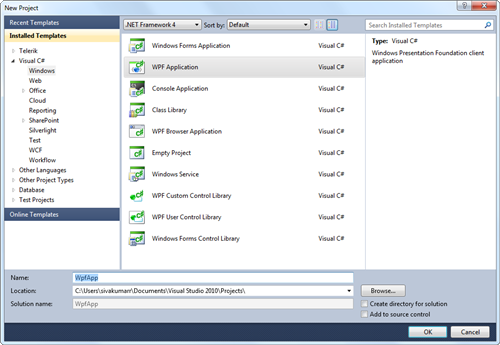
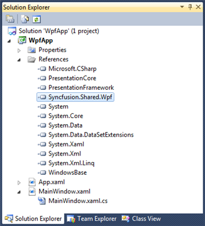

The steps to create a PercentTextBox by using Visual Studio in C# are as follows:
1. Open Visual Studio.
2. On the File menu, select New -> Project. This opens the New Project Dialog box.

Figure 763: Open New Project
3. On the Project Dialog window, select WPF Application, in the name field, type the name of the project, and then click OK.

Figure 764: New Project Dialog
4. Add the following reference with the sample project:
· Syncfusion.Shared.WPF.dll

Figure 765: Solution Explorer
· Click the C# file, to open the C# file and add the PercentTextBox to the application.
|
C#
public partial class MainWindow : Window { public MainWindow() { InitializeComponent(); Syncfusion.Windows.Shared.PercentTextBox percentTextBox = new Syncfusion.Windows.Shared.PercentTextBox(); percentTextBox.Width = 150; percentTextBox.Height = 25; this.LayoutRoot.Children.Add(percentTextBox); } } |

Figure 766: Percent TextBox
Note:
If you do not set any PercentValue to the PercentTextBox then the default value will be as follows:
If the UseNullOption is set to true then,
Value of the NullValue property will be the default value.
Otherwise
Zero will be the default value (based on the MinValue and MaxValue the default value will change).
See Also
Creating a PercentTextBox by using XAML
Creating a PercentTextBox by using Expression Blend